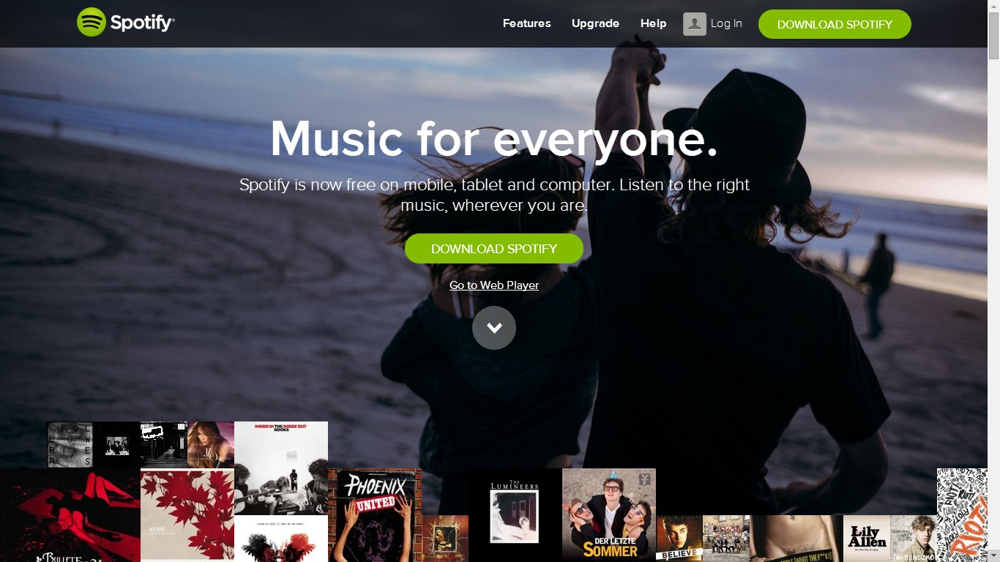
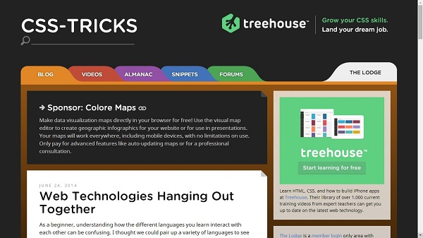
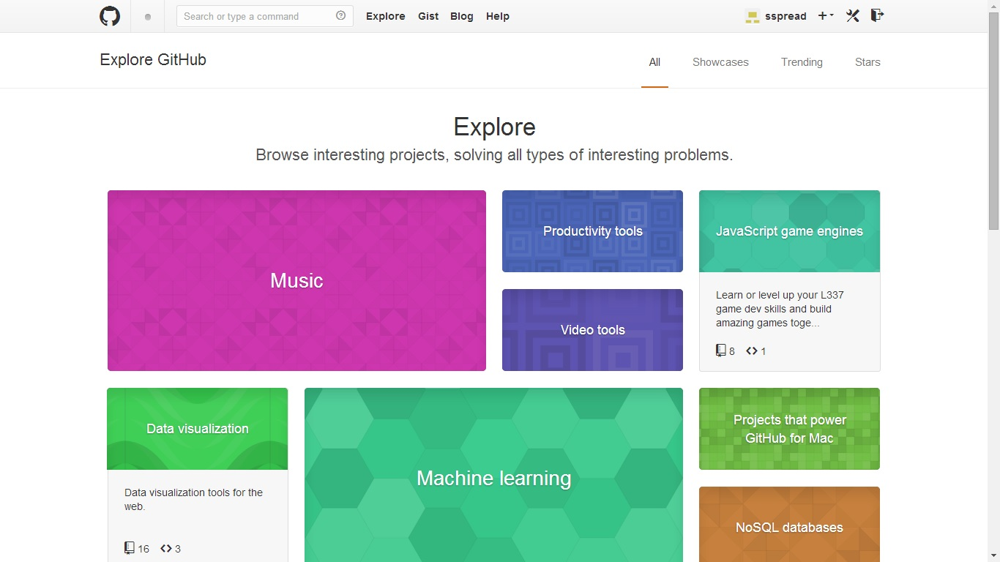

Websites Worth a Visit
June 29.2014
Spotify.com is a music streaming site. I'm a paid subscriber and I use the app on my PC and smartphone every day. Spotify is the way to go for music because it allows you to listen to any song, album or artist on demand. Paid subscribers can download songs to their device to access when offline. Today I checked out the website as opposed to the downloaded app. As the face of the business, this is where Spotify has a chance to make a first impression in hopes of selling its service. The close-up, candid action shots convey a fun-loving attitude that isn't difficult to associate with music on the go. As an aspiring web developer, I am particularly impressed with the way the pictures scroll in tandem with text content. The foreground of text scrolls faster than the alternating photos of twenty-somethings livin' life, giving a stunning, yet humble suggestion that using Spotify is a good idea. Check out Spotify (at least the homepage)!
css-tricks.com is a great site I discovered the other day, probably in the midst of frantically tryin to coax div-a and div-b to behave with div-c. I was instantly drawn to the design of this site. The colors are very appealing and entice the viewer to stay a while and explore. Something very clever I noticed in the design of this site was that it rearranges itself to three distinct layouts as you squish the width of the browser window. I'm not talking the default automatic stuff. The navigation tabs change shape and arrangement. The brown border between each box actually disappears to allow more concise viewing at the smallest with. This is the first time I've noticed such a reactive scheme on a web page. The footer of the site discloses that it was made on WordPress. Is that cheating? Either way, this site is both useful and beautiful.
GitHub.com is an online marketplace for developers to share code. I suppose non-developers could grab some code from GitHub as well, but the site is so overwhelming, I wouldn't want to go near it if I didn't have to. As a relatively new user, GitHub is like a dark basement with a noisy furnace; I'm only going down there to get a screwdriver or change the cat's litter box, and then I'm gone. In lieu of intimidation factor, GitHub is a fantastically practical tool for web development. I've attempted to show its bright and colorful side with a screenshot of the "Explore" page, but the truth is, GitHub is not bright and colorful. It is a confusing web of oversharing. Maybe it's nothing more than my own inexperience, but when it comes to GitHub I want to git what I came for and git out. Fortunately, I'd rather interact with GitHub from the safety of my command line.